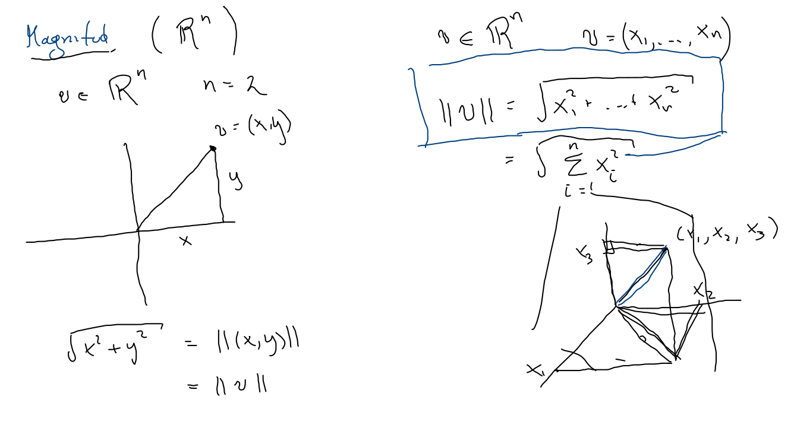
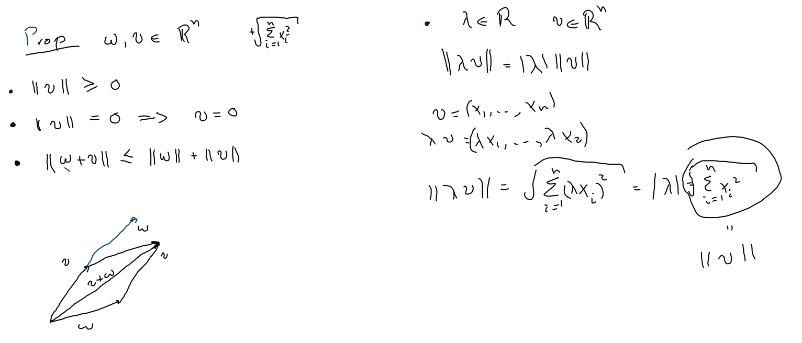
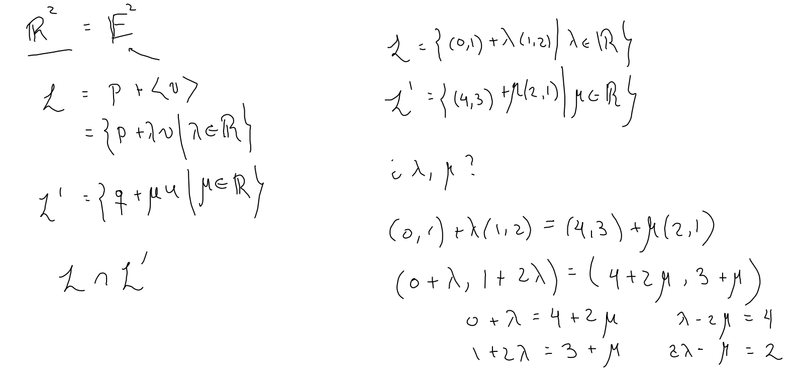
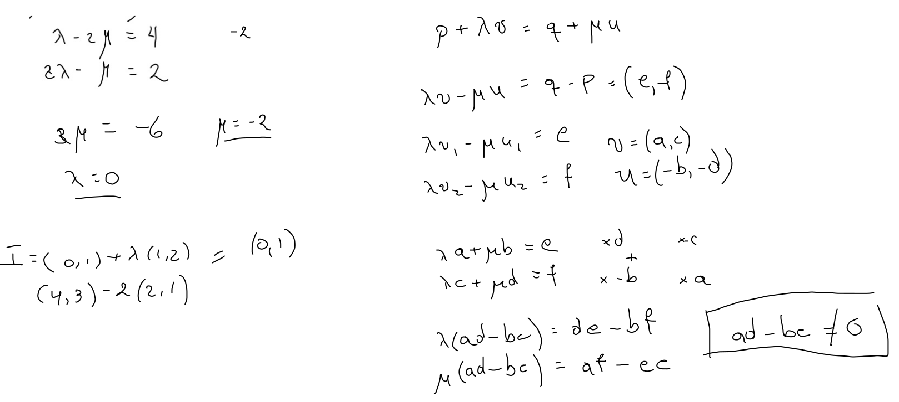

Dado v=(x1,⋯,xn)∈Rn por el teorema de Pitágoras tomamos como definición de la norma de v∣v∣2=i=1∑nxi2
 Propiedades
No negativa
Positiva en vectores no cero
Saca escaleres (con valor absoluto)
Desigualdad de triángulo

Intersección de rectas


Dadas dos rectas, L y L′ en Rn, descritas parametricamente por L={P+λv∣λ∈R}L′={Q+μu∣μ∈R}, su intersección está dada por valores particulares de los parámetros λ y μ tales que: P+λv=Q+μu, los cuales encontramos resolviendo el sistema de ecuaciones eqivalente a λv−μu=Q−P.
En R2 tomemos v=(a,c), −u=(b,d) y Q−P=(e,f), es decir el sistema de ecuaciones (*) esaλ+bμcλ+dμ=e=f, multiplicando por d y −b respectivamente obtenemos: adλ+bdμ−bcλ−bdμ=ed=−bf, sumando (ad−bc)λ=ed−bf, es decir, λ=ad−bced−bf , μ=ad−bcaf−ec, siempre y cuando ad−bc=0.
Proposición El sistema y ecuaciones (*) tiene solución única si su determinantead−bc es diferente de cero.□